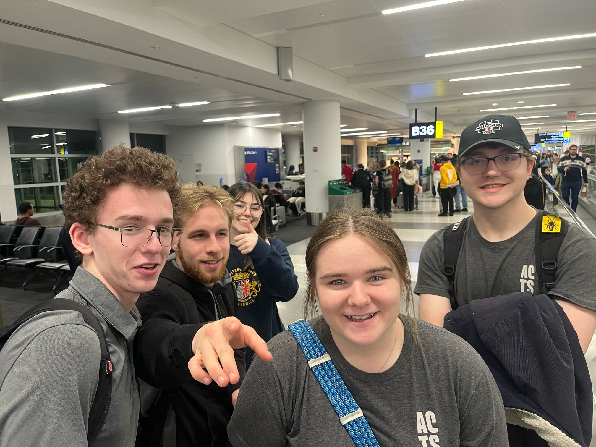
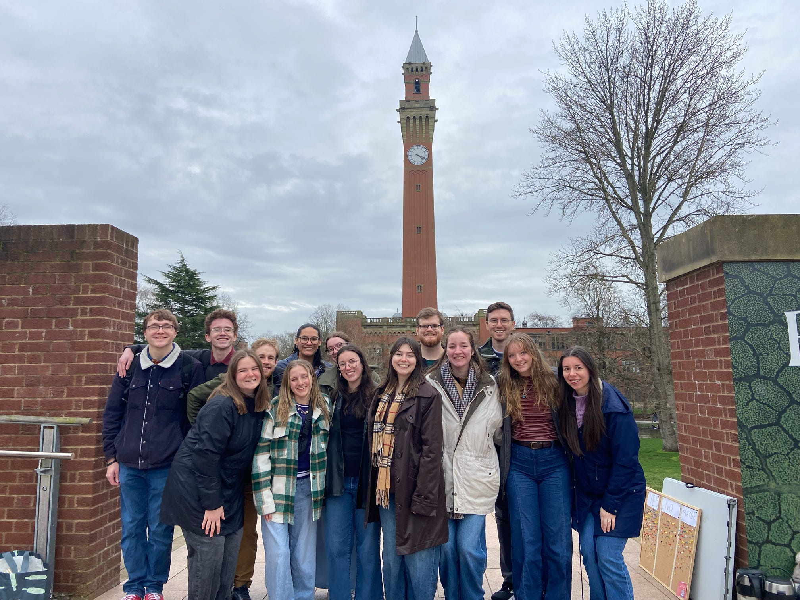
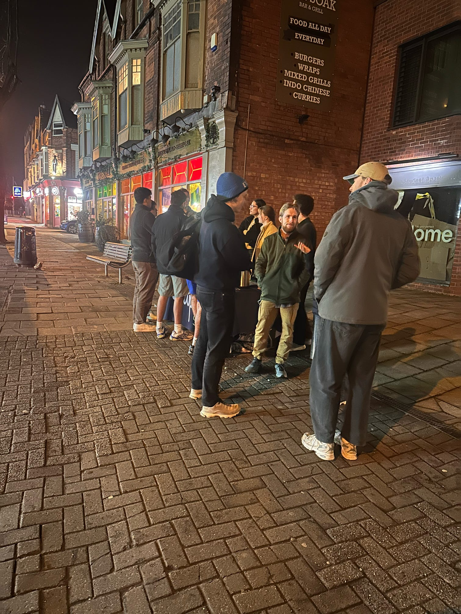
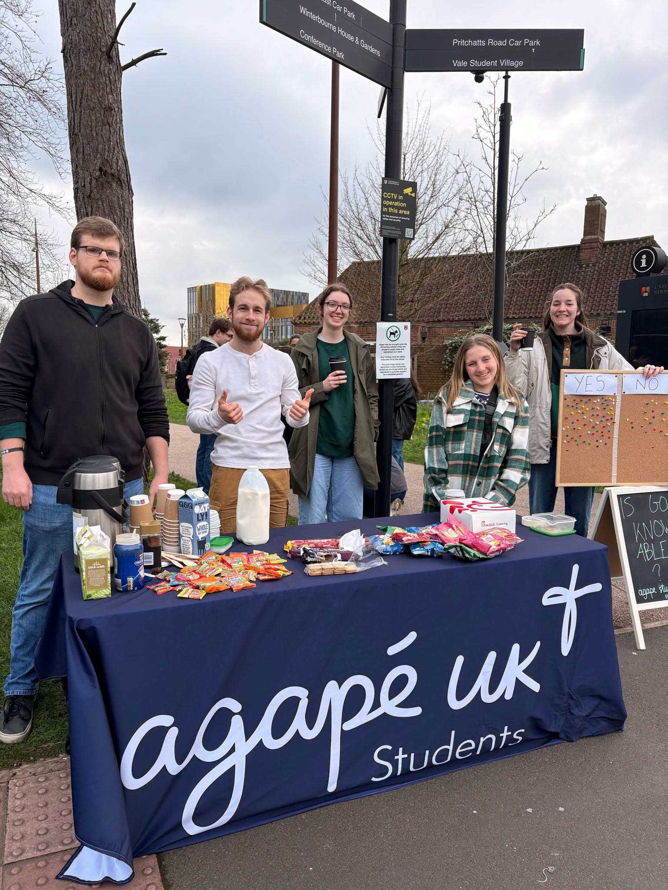
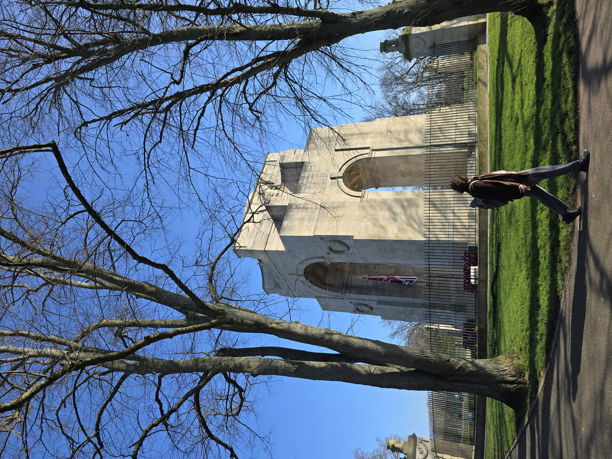
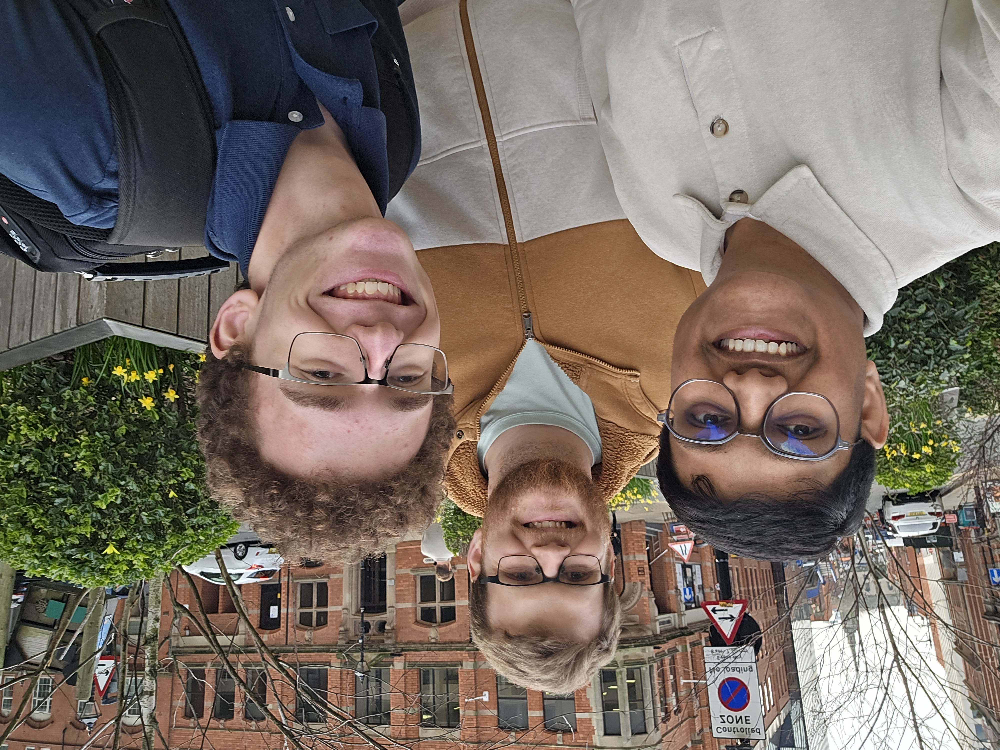
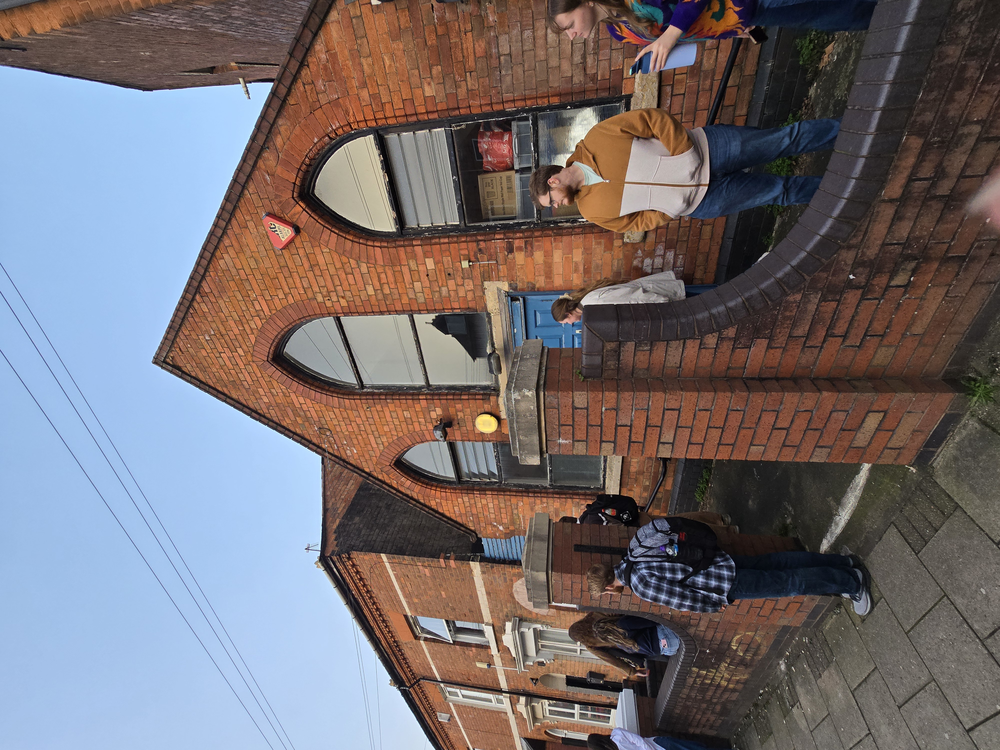
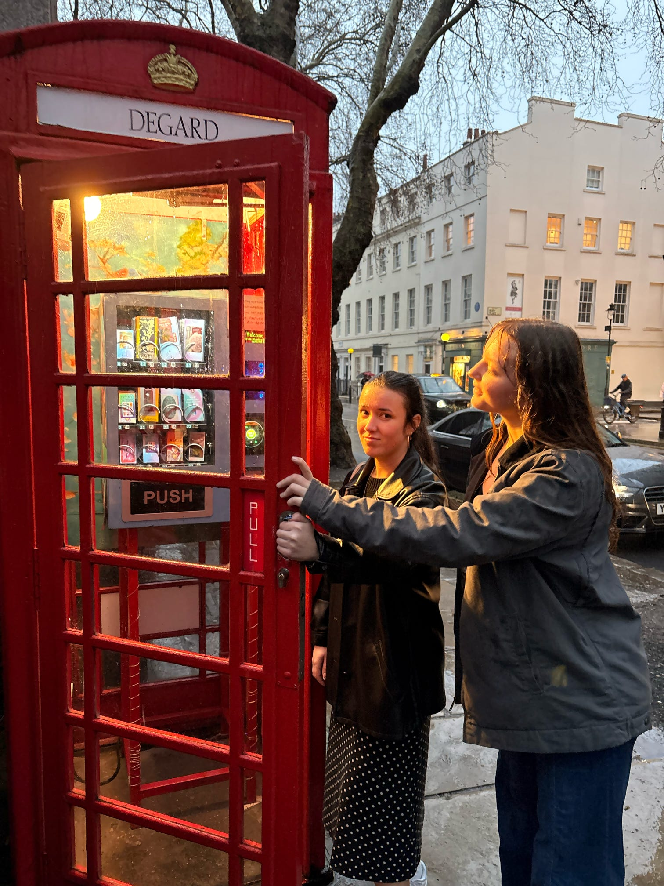
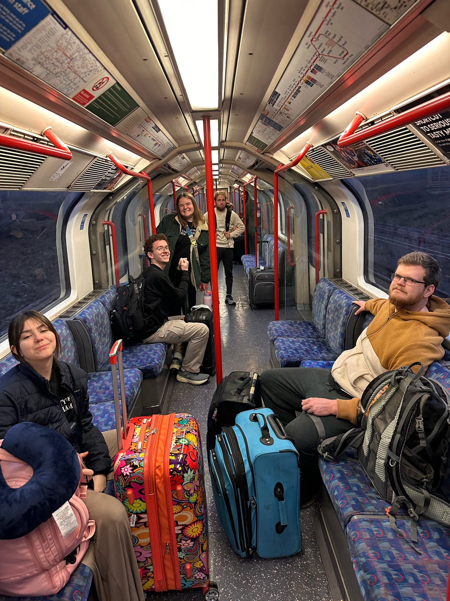

UK Spring Break 2026 Trip
feat. WSU Cru, Cap Fam, and Agape
Hi! My name is Grant Rynders. I am a R&D Software Engineer at Wright State University. I love ice cream, Xenoblade Chronicles, and classic soul music. More importantly for this story though, I am a Christian, and since I started at WSU in 2024, I have been a part of the student organization Cru.
Over my spring break in February of 2026, I decided to go on mission with Central Ohio Cru in the UK. Specifically, we spent most of the trip in Birmingham at and around the University of Birmingham. We also spent a day in Leicester at the University of Leicester and a tourist day at the very end in London.
Here's my account of the trip with what I found meaningful:
2/27-2/28: An Unexpected Journey
From there, we took a short flight to JFK Airport in New York. Our flight got delayed for several hours, but eventually we got going and began our long flight to London. Eventually by late Saturday afternoon, we arrived at London Heathrow airport.

2/28-3/1: The Bournebrook Inn

3/2: Learning to talk to British People
On Monday, we started our on-campus ministry. Our group splits in half: one group stays at the campus entrances to table, and the other group pairs up and does initiative evangelism with students all around the campus.
During the day, most of us didn't have too many great conversations. We were all super nervous, and approaching people felt very intimidating.
However, after leaving campus our day wasn't over. On Monday night, we planned to do what we called "night-reach" where we passed out snacks and hot drinks outside the clubs around the Uni. This turned out to be one of the most fruitful times of the trip.
We ended up having a conversation with a friendgroup of students from all sorts of backgrounds for several hours straight. While we were talking to them, a few people left the club because they had lost a bet and needed someone to pour ice on them. By this random chance, we got to talk with them too (albeit they were intoxicated enough I don't know how much stuck).

3/3: Lounging with Law Students
On Tuesday, we employed pretty much the same strategy.
We had a bunch of conversations, but my favorite was the one I got to have when Jayne (another student from WSU) and I were walking to the cafe to get lunch. I was not intent on not talking with anyone. I wanted to get a cup of hot cocoa and relax before switching out with the people at the tables. But alas God had other plans.
As we were walking in, a girl sitting outside the the cafe complemented Jayne's hair, and we stopped to talk to her. We sat down and began learning about her background as an Islamic law student from Turkey and explaining to her who we were. Like a lot of the students, she was very confused why a bunch of Americans decided to go to Birmingham of all places.
As we sat with her, two guys from the international law program she was a part of came down and sat with us. One was a former Catholic from Ecuador and the other was from a mixed religious backgroung in Thailand. Because of Ohio's reputation in internet culture, we had a lot of laughs explaining what it was actually like to them. We ended up hanging out with them for several more hours and got food together at a neighboring food truck.
This was one of my favorite conversations I had because it happened completely spontaneously without any effort (or frankly any desire) from myself. God knew they would be there at that time and made sure Jayne's hair was especially nice looking that day.

3/4: Leicester but not Lesser
On Wednesday, we took the train to Leicester and meet students at the University of Leicester.
When we arrived there, we met up with a Agape student at the Uni, who gave us a quick tour.
Once the tour was finished, we all got lunch at the food court and grouped up to go sharing on campus using Soularium.
Soularium is basically just a deck of cards with pictures on them; you ask questions like "What cards describe your life right now?", then you talk about it. This is my personal favorite way to talk to new people because it gives people a simple, accessible way to express their feelings visually.
We ended up having a really great conversation with a couple masters students from India, who were really eager to share about their culture with us. Despite being complete strangers, they treated us with complete hospitality, showed us around, and bought us coffee.
Though they definitely didn't 100% grasp some of the theology we talked about, the fact that we even went out of our way to talk to them seemed to really leave an impact.

3/5: Agape in the Heart of the City
On Thursday, we went to the Birmingham city center and met up again with Agape staff during the day. It was very cool to hear everyone recap the stories of what had happened during the week that I hadn't heard yet.
One of the standout things from everyone's stories for me was that none of the stories were about any of us saying anything magical or super intelligent. It was always just the intentionality, the kindness, and the care for the other person that made an impact. Very few of us would have called ourselves good at apologetics, but all of us were able to come out having made an impact on people's lives.
Additionally, while we were there, Joe and I met up with one of the master's students from Leicester who was coincidentally doing immigration paperwork in Birmingham that day.

3/5: Reuniting with New Friends
On Thursday night, we return to the university area and host a gathering at a little church that we invite all the people we've met during the week to.
It was really incredible to see how many people actually showed up. We can barely get classmates at Wright State to show up to things, and these UK students showed up to a random church to hang with us almost on a whim. There definitely is an openness to receive hospitality there that in America we just don't have.
The law students Jayne and I had befriended outside the Cafe on Tuesday showed up to our surprise. Another student from Nigeria who was a strong Christian made friends with them and shared her testimony with them, which never would have happened otherwise. Even one of the students that was absolutely sloshed outside the bar on monday night came.
The UK students were terrified of the intensity with which we played "Taco Cat Goat Cheese Pizza" as we all dug into American snacks we had brought over and some Domino's Pizza. It was truly incredible to see the tables full of students from all over the world that we got to bring together.
Throughout the week, we had little to no "decisions for Christ" which is the metric a lot of evangelical organizations use to measure success.
However, as I looked around the little church, I remembered what we had been told at the start of the week. The goal was never to get people to the "end of the race". It was to get them a step or two closer. The trust that all these former strangers had in us was proof that I think we accomplished that.

3/6: Obnoxious Americans in the British Capital
On Friday morning, we took a train to London and explored the city for the day.
We attended a service midday at Westminster Abbey. This was cool but weird for everybody but Joe who is Anglican and was used to it.
Because we only had one day, we didn't spend much time anywhere. We did however spend a good amount of the evening in the National Gallery, which was incredibly beautiful.
At the end of the night, we saw the stageshow version of Disney's Hercules which was surprisingly good.

3/7: There and Back Again
On Saturday morning, we took the tube back to London Heathrow Airport and began our flight back to New York then home.
By some miracle, we all made it through TSA on time despite our tight schedule, and only one of our bags was lost.
If you for whatever reason read all the way to the end, thank you! I usually write for code compilers not human beings, but I hope you didn't suffer too badly.
